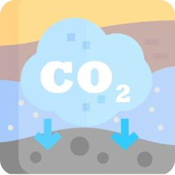

陳尚潁
Shang-Ying Chen, Ph.D.
國立成功大學 資源工程學系 助理教授
Assistant Professor, Department of Resources Engineering, National Cheng Kung University
地下資源與智慧計算研究室
- 學歷
- 國立成功大學 資源工程學系 博士（2022）
- 經歷
- 史丹佛大學 能源科學與工程學系 訪問博士後（2024–2025）
國立臺南大學 綠色能源科技學系 助理教授（2026） - 辦公室
- 資源新館四樓 43408
- 電話
- 06-2757575 分機 62835
- shangying@gs.ncku.edu.tw
最新消息LATEST NEWS全部消息→
01
研究領域
Research Areas以不確定性量化、資料同化與物理資訊神經網路，發展地下系統的數值模擬與預測方法。

地熱能源
Geothermal Energy

地下儲能
Underground Energy Storage

放射性廢棄物處置
Radioactive Waste Disposal

二氧化碳地質封存
CO₂ Geological Storage

永續地下水與污染整治
Sustainable Groundwater & Remediation

地質災害與工程安全
Geohazards & Engineering Safety